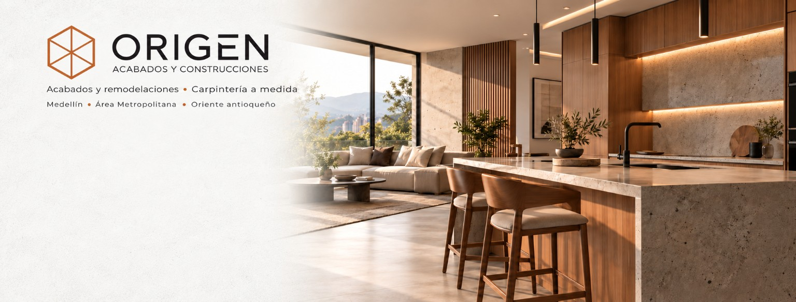

Tu idea
Cuéntanos qué quieres renovar, dónde está el espacio y qué referencias te inspiran.

ESPACIOS CON IDENTIDAD
Remodelación y carpintería a medida para transformar tu casa en el lugar que quieres vivir.
EL ESPACIO QUE IMAGINAS
Una cocina que reúne. Un mueble que aprovecha cada rincón. Acabados que le dan carácter a tu hogar.
En Origen, reunimos carpintería y remodelación para darle forma a espacios funcionales, cálidos y pensados alrededor de ti.
Cuéntanos qué quieres transformar ↗QUÉ PODEMOS TRANSFORMAR
DEL DETALLE AL ESPACIO COMPLETOUNA MIRADA AL DETALLE
La madera, las superficies claras y la luz cálida crean una cocina que se abre al resto del hogar.
Barra que conecta
cocina y zona social
Almacenamiento integrado
y nichos abiertos
Texturas de madera
y contrastes oscuros
Fotografía del proyecto con retoque digital de presentación.
EL LENGUAJE DE LOS MATERIALES
Una combinación equilibrada puede cambiar la sensación de todo un espacio. Estas son las claves visuales de la cocina presentada.
Vetas y tonos que aportan cercanía.
Limpieza visual y equilibrio.
Acentos que definen el carácter.
DE LA IDEA AL ESPACIO
Cuéntanos qué quieres renovar, dónde está el espacio y qué referencias te inspiran.
Definimos medidas, necesidades y acabados para preparar una propuesta.
Revisamos contigo el alcance, el presupuesto y los tiempos antes de comenzar.
La ejecución da forma a lo acordado, hasta los ajustes y detalles finales.
EL SIGUIENTE PASO
Una referencia, unas medidas o simplemente eso que quieres cambiar. Todo proyecto tiene un punto de partida.
ANTES DE EMPEZAR
El tipo de trabajo, la ubicación y, si las tienes, fotos y medidas aproximadas. Las referencias del estilo que te gusta también ayudan a definir el alcance.
Sí. Puedes empezar por una cocina, un baño o un mueble a medida. Cuéntanos qué necesitas para revisar el trabajo concreto.
La imagen presentada tiene retoque digital. Los materiales, la iluminación y los detalles específicos de tu proyecto se revisan en la propuesta y deben confirmarse antes de la ejecución.